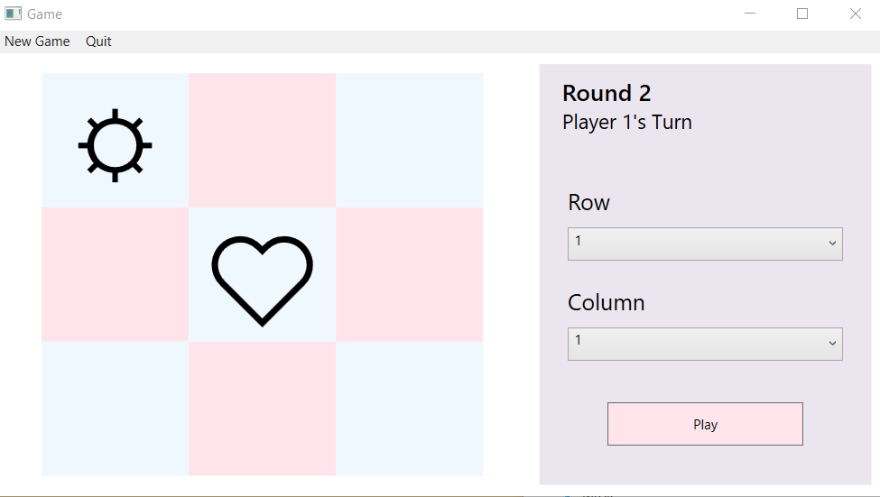
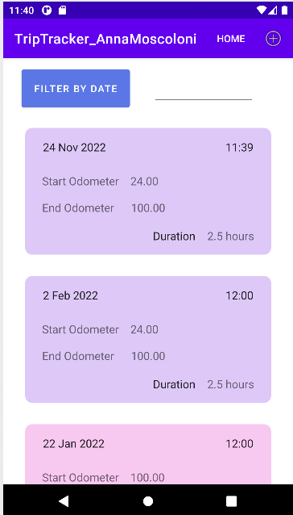
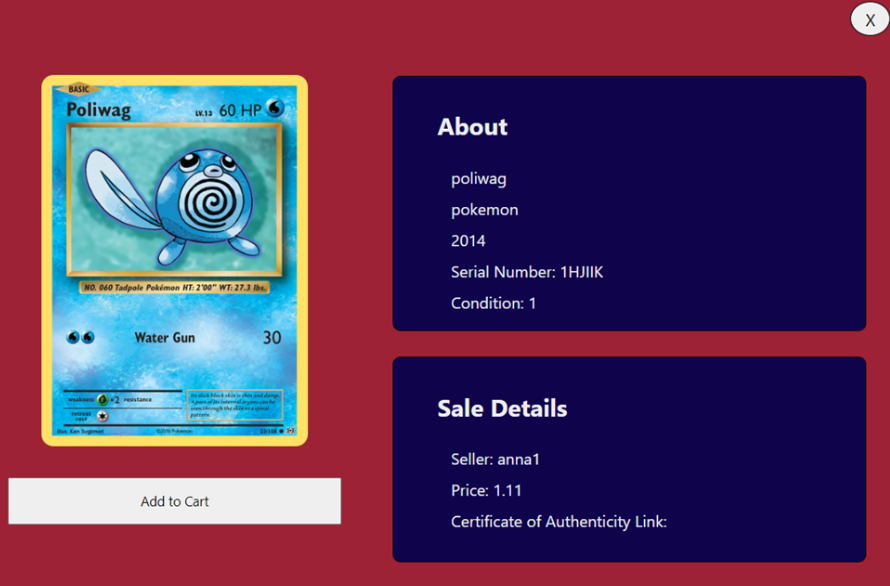

Assignment for Application Development I during Winter 2022 semester. Refactored code from Sandy Bultena into MVP architectural pattern, designed Tic Tac Toe user interface and added extra features such as selecting player icon, and wrote presenter unit tests. The application allows 2 users to play a tic tac toe game. Upon starting the application, the user is able to enter a settings page or start a new game. In the settings page, the user is able to select an icon for the first and second player. Once the player begins a new game, the game alternates between prompting each player to select a tile. The turns continue until their is either a tie or one of the players win.

Created for a Fall 2022 Application Development II course. This application allows drivers to add, view, edit and delete trips they made. Each trip added includes the car's odometer at the start and end of the trip, the date and time of the trip, the duration of the trip, and whether the trip was for uber or a personal trip. All inputed trips are displayed on a dashboard and colour coded based on whether they are a personal or uber trip. Each trip can be deleted or edited via a context menu that appears when the user hold-clicks. There is also an option to filter the list of trips by the date, which is selected through a datepicker.

Created as a final project for a Web Programming II course in Winter 2022 in collaboration with Simon Stasovski and Kevin Laskai. This web application provides a utility for card collectors to upload their cards and store their card deck virtually as well as sell and buy from other users' collections. Users are able to create an account and upload, manage, edit and view their card deck as well as filter their deck or search for a specific card. Users can also put their cards up for sale and shop other user's cards and purchase them. Filters as well as targeted searches are also available when shopping for cards.